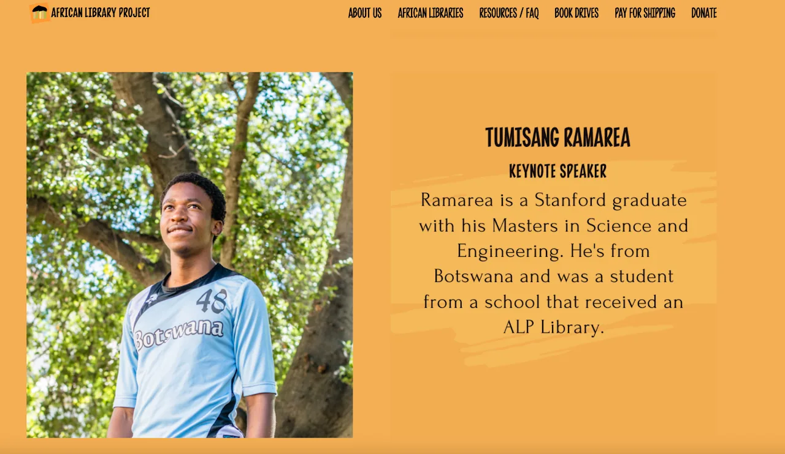
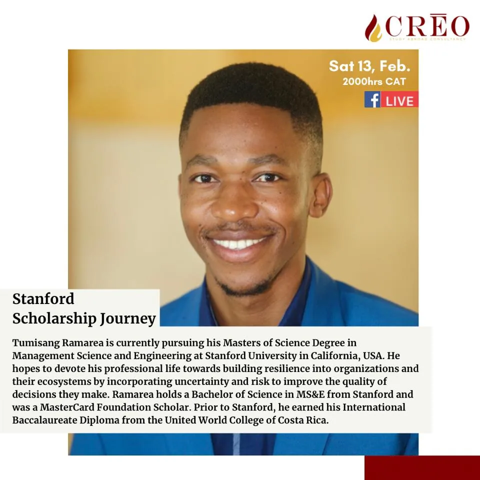
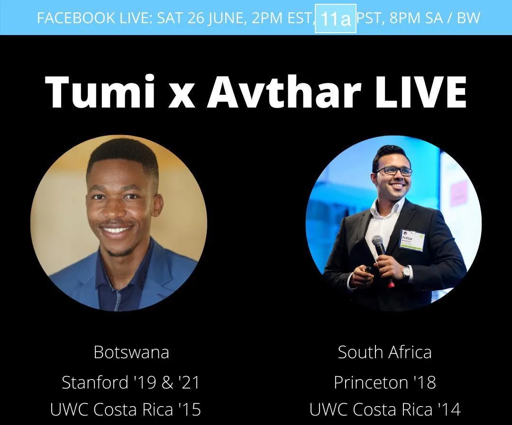

One of the ways I give back to communities that have made me who I am, is through sharing wisdom from my experiences. The idea behind this is not to imply I have found the answers to success, oh no I am far from there, but to inspire others to find their own secret to success. I share my stories to live, “...and as we let our own light shine, we unconsciously give other people permission to do the same.” Below are some talks I have given sharing bits of my story. I hope they are of use to at least one person out there. I also want to say that I love myself a lot and my confidence can come across as a lot, so please do not take me all too seriously. I know I need to take a chill pill, to be humble and sit down. But I also think part of humility is owning up to who you are, without forcing it down anyone’s throat. It would be fear to keep my light hidden under the bed. Fear and humility should never be confused.
Keynote — African Library Project Harambee Dinner
22 October 2022
On October 22nd, 2022 I delivered the keynote speech at the African Library Project at their annual fundraising Harambee dinner! (A summary of the event may be found here.)

Botswana Student Network of the Americas
July 2022
In July 2022, I was honored to share the my professional journey with the students of the Botswana Student Network of the Americas. I focused the presentation on what I learned applying for jobs as an international student in the US.
The Scholar and The Student Podcast
October 2020 · Released 14 March 2021
In October 2020, I was interviewed by my friend and brother, Mostakim Habib, for his podcast The Scholar and The Student. Our conversation was released as episode 3 of season 2 on March 14, 2021. We discussed everything from my days as a debate star in Botswana to my experiences studying abroad. We also discussed cancel culture, our responsibility as men in transcending the toxic masculinity from our socialization, and my hopes and dreams for Botswana.
Creo Consultancy with Emang Rabogadi
I had the pleasure of being interviewed by my dear friend and self-acclaimed college matchmaker, Emang Rabogadi. The conversation was an opportunity for me to share my story with her audience on her page Creo Consultancy, with a particular emphasis on navigating failure and complexity on my way to earning a world-class education from both the United World College of Costa Rica and Stanford University on the MasterCard Foundation Scholarship. The conversation may be found on Facebook here.

African Library Project Harambe Fundraiser
October 2020
In October 2020, I was featured in a video at the annual Harambe Fundraiser for the African Library Project, an organization whose work I endorse.
Guest Lecture — Business Finance
3 July 2020 · Colégio Angolano do Talatona, Luanda, Angola
On July 3rd, 2020, I was honored to give a guest lecture on business finance to A-Level Business Studies students at Colégio Angolano do Talatona in Luanda, Angola via Zoom.
LearnWithAvthar
June 2020
In June 2020, I was hosted by my friend and colleague from UWC Costa Rica, Avthar, for his LearnWithAvthar productions. We discussed our experiences at UWC, the transition to university in the US, and our professional aspirations, with considerations for our relationship with our native Africa. The video interview may be watched on Facebook here. This is also available as a podcast here.

AwesomeGlowsome — Black Lives Matter Series
Summer 2020
Following the tragic murder of George Floyd in Minnesota in the summer of 2020, a lot of people were moved to speak out against systemic racism and to educate those in their circles who appeared to not understand why racial justice is important. In a bid to confront the racism and anti-black sentiment she encountered from her connections in her native India, my friend Niharika of AwesomeGlowsome fame put together a Black Lives Matter series. While I am still a student of race politics in the United States, I felt sharing my own experience might help my friend in her noble endeavor. In addition to my experience with race politics in the US and colonialism, we also discussed my journey from Botswana to the world: my education in Costa Rica, the US, summer fellowships in Sri Lanka, and my involvement with entrepreneurship in Africa. For more videos on her Black Lives Matter series, check out her YouTube Channel.
Note: The videos from this series have been removed from YouTube and are no longer available.
These Colorful Pens I Carry
Stanford University · ENGR 103: Public Speaking
Pardon the low quality of the video, but I thought it is worth sharing regardless. This is a speech I gave for my ENGR 103: Public Speaking class at Stanford this past winter. In the speech I explain why I always carry colorful pens and journals almost everywhere I go. It is a speech about Art and Healing.
UWCCR VP Campaign Speech
United World College of Costa Rica
Navigating Around Challenges of Growing Up in Botswana — TEDxUWCCR
TEDx Talk · United World College of Costa Rica · 2014
You've probably heard of Kanye West. Tumisang Ramarea was born in Kanye East in southeastern Botswana. With humor and incredible poise, Tumisang recounts stories from his childhood, showing us his love for his country and proving to us the power of education.
← Return to Do